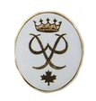

Commandants
- Capt Claude Roy, CD (Septembre 1979 à Janvier 1982)
- Capt Louis-Joseph Servant, CD (Janvier 1982 à Septembre 1982)
- Capt Alain Desjardins, CD (Septembre 1982 à Novembre 1986)
- Lt Randy Mc Intosh, CD (Novembre 1986 à Janvier 1988)
- Capt Alain Desjardins, CD (Janvier 1988 à Novembre 1990)
- Maj Serge Leduc, CD (Novembre 1990 à Juin 1995)
- Capt Denis Lefebvre, CD (Juin 1995 à Juin 1998)
- Capt Luc Dumouchel, CD (Juin 1998 à Septembre 2001)
- Maj Serge Leduc, CD (Septembre 2001 à Septembre 2004)
- Maj Daniel Melanson, CD (Septembre 2004 à Septembre 2007)
- Capt Sébastien Boucher, CD Septembre 2007 à Mai 2011)
- Capt Anne-Marie Richard, CD (Mai 2011 à Février 2013)
- Capt Sébastien Boucher, CD (Février 2013 à Juin 2013)
- Capt Matthieu Vincent (Juin 2013 à Juin 2017)
- Capt Nancy Lindsay, CD (Juin 2017 à Octobre 2019)
- Capt Marc Hardy (Octobre 2019 à Juin 2022)
- Capt Vicky Morin, CD (Juin 2022)

Cadets-Commandants
- Adjuc Alain Desjardins (Septembre 1979 à Décembre 1979)
- Adjuc Benoit Provost (Décembre 1979 à Juin 1980)
- Adjum Benoit Girard (Septembre 1980 à Janvier 1981)
- Adjuc Martin Colbert (Janvier 1981 à Octobre 1982)
- Adjuc Pierre Richard (Octobre 1982 à Décembre 1984)
- Adjuc Céline Portant (Décembre 1984 à Juin 1985)
- Adjuc Serge Bisson (Septembre 1985 à Avril 1986)
- Lt Michel Nareau (Avril 1986 à Septembre 1986)
- Adjuc Réjean Masson (Octobre 1986 à Février 1987)
- Adjuc Denis Lefebvre (Février 1987 à Avril 1987)
- Adjuc Manon Vandelac (Avril 1987 à Septembre 1987)
- Adjuc Dave Desabrais (Septembre 1987 à Septembre 1988)
- Adjuc Anne-Marie Nareau (Septembre 1988 à Mars 1989)
- Adjum Mark-Erick Théberge (Mars 1989 à Avril 1989)
- Adjuc Sylvain Melanson (Avril 1989 à Juin 1990)
- Adjuc Daniel Melanson (Septembre 1990 à Janvier 1993)
- Adjuc Catherine Fortier (Janvier 1993 à Juin 1994)
- Adjuc Josée Doyon (Septembre 1994 à Janvier 1995)
- Adjuc Anne-Marie Richard (Janvier 1995 à Juin 1995)
- Adjuc Stéphane Couturier (Septembre 1995 à Juin 1996)
- Adjuc Marie-Pier Barbeau (Septembre 1996 à Juin 1998)
- Adjuc Sébastien Boucher (Septembre 1998 à Juin 1999)
- Adjuc Mélanie Dumouchel (Septembre 1999 à Juin 2000)
- Adjuc Valérie Barbeau (Septembre 2000 à Juin 2001)
- Adjuc Michel Dubuc-Martin (Septembre 2001 à Juin 2002)
- Adjuc Sébastien Maher (Septembre 2002 à Juin 2003)
- Adjuc Mélanie Godette (Septembre 2003 à Juin 2004)
- Adjuc Matthieu Vincent (Septembre 2004 à Juin 2006)
- Adjuc Marie-Pier Richard(Septembre 2006 à Juin 2007)
- Adjuc Maxime Bertrand(Septembre 2007 à Juin 2008)
- Adjuc Valérie Desmarais(Septembre 2008 à Juin 2009)
- Adjuc Alexandra Hamelin (Septembre 2009 à Avril 2010)
- Adjuc Valérie Fournaise (Septembre 2010 à Juin 2011)
- Adjuc Pascale Chiasson (Septembre 2011 à Juin 2013)
- Adjuc Maxime Lefrançois (Septembre 2013 à Juin 2014)
- Adjuc Mickaël Tremblay (Septembre 2014 à Juin 2015)
- Adjuc Frédérick De Blois (Septembre 2015 à Mars 2016)
- Adjum William Bouchard-Dulude (Mars 2016 à Septembre 2016)
- Adjuc Raphaelle Debellefeuille (Septembre 2016 à Juin 2018)
- Adjuc Yohann Lampron (Septembre 2018 à Décembre 2018)
- Adjuc Justin Gagné-Rosière (Décembre 2018 à Juin 2019)
- Adjuc Daphney Laforest-Picard (Septembre 2019 à Février 2022)
- Adjuc Vicky Roy (Février 2022 à )
Tambours-Majors
- Sgt Catherine Fortier (1991-1993)
- Sgt Noémie Lafond (1993-1996)
- Sgt Marie-France Lemay (1996-1997)
- Adj Valérie Barbeau (1997-1999)
- Adjum Christine Côté (1999-2001)
- Adjum Véronique Gaudette (2001-2003)
- Adjum Karine Leduc (2003-2005)
- Adjum Marie-Pier Leduc (2005-2007)
- Sgt Gabriel Couturier (2007-2008)
- Sgt Kevin Phang (2008-2009)
- Adj Pascale Chiasson (2009-2011)
- Adjum Stephanie Burke (2011-2013)
- Adj Danny Boyer (2013-2014)
- Adjum Gabriel Taillon (2014-2015)
- Adj Jessica Gadoury (2015)
- Adjum Michael Rioux (2015-2019)
- Adjum Emile Laferrière (2019-2023)
Médaille de Services 4 ans
- Sgt Christopher Albert
- Sgt Daniel Barrena
- Sgt Samuel Bouchard
- Adj William Bouchard-Dulude
- Adj Antoine Boudreau
- Adj Alexandre Braure
- Sgt Méliane Carrier-Favreau
- Sgt Samuel Coté-Joanette
- Sgt Maude Daigneault
- Sgt Raphaelle De Bellefeuille
- Sgt Claudia Faubert
- Adj Justin Gagné-Rosière
- Sgt Guillaume Labelle
- Adj Daphney Laforest-Picard
- Adj Jérémy Laforest-Picard
- Sgt Yohann Lampron
- Sgt Antoine Levesque
- Adj Adam Levis-Paquet
- Sgt Joel-David Liriano-Marotte
- Sgt Gabrielle Marin
- Sgt Eric McCracken
- Adj Kassandra Papineau
- Adj Vincent Pelletier
- Sgt Sacha Regimbald
- Sgt Jessy Renaud
- Adj Jérémy Rioux
- Adj Michael Rioux
- Adj Antoine Tougas
- Adj Caryne Turner
Médaille de Services 5 ans
- Adj Daniel Barrena
- Adjum William Bouchard-Dulude
- Adj Raphaelle Debellefeuille
- Adj Frédérick De Blois
- Adj Claudia Faubert
- Adjuc Justin Gagné-Rosière
- Adj Guillaume Labelle
- Adj Maude Lalonde
- Adjum Yohann Lampron
- Adjum Emile Laferrière
- Adjum Maude Lalonde
- Adjum Emmanuel Rioux
- Adj Michael Rioux
- Adj Nicolas Robinson
- Adj Dereck Tanguay
- Adj Gabriel Taillon
- Adj Alexandre Therrien
- Adjum Mickaël Tremblay
- Adjum Caryne Turner
Médaille de Services 6 ans
- Adjuc Maxime Bertrand
- Adj Danny Boyer
- Adj Stephanie Burke
- Adjuc Raphaelle Debellefeuille
- Adjum Frédérick De Blois
- Adjuc Maxime Lefrançois
- Adjum Michael Rioux
- Adjum Gabriel Taillon
- Adjuc Mickaël Tremblay
Médaille de Services 7 ans
- Adjudant-Chef Maxime Lefrançois
- Adjudant-Chef Pascale Chiasson
Médaille d'Excellence de la Légion Royale Canadienne
- Cpl Yannick Boileau (1992)
- Cplc Stéphane Couturier (1993)
- Cplc Marie-France Lemay (1994)
- Sgt Marie-Pier Barbeau (1995)
- Adj Valérie Larochelle (1996)
- Adj Sébastien Boucher (1997)
- Adj Yannick Veilleux (1998)
- Adj Mélanie Dumouchel (1999)
- Adj Valérie Barbeau (2000)
- Adjum Christine Côté (2001)
- Adj Nancy Lindsay (2002)
- Adj Karine Leduc (2004)
- Adjuc Matthieu Vincent (2005)
- Sgt Valérie Desmarais (2007)
- Sgt Alexandre Poirier (2008)
- Adj Alexandra Hamelin (2009)
- Adjum Catherine Larose (2010)
- Adj Jonathan Théberge (2011)
- Adjuc Pascale Chiasson (2012)
- Sgt Frédérick DeBlois (2013)
- Sgt William Bouchard-Dulude (2014)
- Sgt Raphaelle De Bellefeuille (2015)
- Cplc Magalie Blanchette (2016)
- Adj Michael Rioux (2017)
- Adjum Yohann Lampron (2018)
- Adj Mathieu Chartrand (2019)
- Adj Myranie Bonneau (2022)

Médaille Lord Stratchona
- Cplc Martin Colbert (1980)
- Cpl Pierre Hamel (1981)
- Adj Pierre Richard (1982)
- Adj Manon St-Denis (1983)
- Adjum Céline Portant (1984)
- Cpl Denis Lefebvre (1985)
- Cpl Dave Desabrais (1986)
- Adjuc Manon Vandelac (1987)
- Adjuc Anne-Marie Nareau (1988)
- Adjuc Sylvain Melanson (1989)
- Sgt Sylvain Deschesnes (1990)
- Adjuc Daniel Melanson (1991)
- Adj Catherine Fortier (1992)
- Cpl Danièle Tremblay (1993)
- Adj Josée Doyon (1994)
- Adjuc Anne-Marie Richard (1995)
- Adjum Joan Chiquette (1996)
- Adjuc Marie-Pier Barbeau (1997)
- Adjum Sébastien Boucher (1998)
- Adjum Yannick Veilleux (1999)
- Adjuc Mélanie Dumouchel (2000)
- Adjum Monique Cousineau (2001)
- Adjum Phillipe Bond (2002)
- Adjuc Sébastien Maher (2003)
- Adjum Marie-Hélène Cousineau (2004)
- Adjum Karine Leduc (2005)
- Adjum Marc Hardy (2006)
- Adjuc Marie-Pierre Richard (2007)
- Adjuc Maxime Bertrand (2008)
- Adjuc Valérie Desmarais (2009)
- Adjum Véronique Desmarais (2010)
- Adj Pascale Chiasson (2011)
- Adjum Maxime Lefrançois (2012)
- Adj Stephanie Burke (2013)
- Adj Frédérick DeBlois (2014)
- Adj Antoine Boudreau (2015)
- Adj Raphaelle Debellefeuille (2016)
- Adj Yohann Lampron (2017)
- Adj Justin Gagné-Rosière (2018)
- Adjum Michael Rioux (2019)
- Adjuc Vicky Roy (2022)
Médaille du Jubilé de Diamant de la Reine Elizabeth II
- Adjudant-Chef Pascale Chiasson
- Lieutenant Matthieu Vincent
Prix du Duc d'Edimbourg Bronze
- Adjum Nancy Doiron (1993)
- Adj Josée Doyon (1993)
- Adj Stéphane Couturier (1993)
- Cdt Patrick Duval (1994)
- Cpl Danièle Tremblay (1994)
- Cdt Patrice Ratia (1995)
- Cdt Éric-Claude Laberge (1995)
- Cplc Sébastien Boucher (1996)
- Cdt Yan Danegnais (1998)
- Cdte Valérie Barbeau (1998)
- Cdte Monic Cousineau (1998)
- Cpl Andréanne Daigneault (2000)
- Cdt Alexandre Campbell (2000)
- Cdte Marie-Pier Richard (2005)
- Sgt Mathieu Durivage (2005)
- Cplc Gabriel Taillon (2013)
- Sgt Yohann Lampron (2016)
Prix du Duc d'Edimbourg Argent
- Sgt Stéphane Couturier (1994)
- Adjum Nancy Doiron (1994)
- Adj Josée Doyon (1994)
- Anne-Marie Richard (1994)
- Cdte Danièle Tremblay (1995)
- Cdte Monic Cousineau (1998)
- Sgt Andréanne Daigneault (2001)
- Cdt Alexandre Campbell (2001)
- Sgt William Bouchard-Dulude (2014)
- Adjum Gabriel Taillon (2015)

Prix du Duc d'Edimbourg Or
- Adjum Sébastien Boucher (1999)
- Cdte Valérie Barbeau (1999)
- Adjum Alexandre Campbell (2003)
- Adj William Bouchard-Dulude(2015)
Étoile Nationale d'Excellence Niv. 1
- Adj Christopher Albert
- Sgt Daniel Barrena
- Sgt William Bouchard-Dulude
- Adj Myranie Bonneau
- Adj Antoine Boudreau
- Sgt Danny Boyer
- Sgt Raphaelle De Bellefeuille
- Adj Mijael Dion
- Adj Emile Laferrière
- Adj Adam Levis-Paquet
- Sgt Gabrielle Marin
- Adj Dumitru Mirza
- Adjum Gabriel Taillon
- Adjum Emmanuel Rioux
- Adj Rachel Rioux
- Adj Vicky Roy
- Sgt Alexandre Therrien
- Adjuc Mickaël Tremblay
- Sgt Rafael Venditti
Étoile Nationale d'Excellence Niv. 2
- Adj William Bouchard-Dulude
- Adj Stephanie Burke
- Adjum Emile Laferrière
- Adj Adam Levis-Paquet
- Adjum Emmanuel Rioux
- Adjuc Vicky Roy
Étoile Nationale d'Excellence Niv. 3
- Adjum Emile Laferrière
- Adjum Emmanuel Rioux
Étoile Nationale d'Excellence Niv. 4
- Adjum Emile Laferrière
- Adjum Emmanuel Rioux